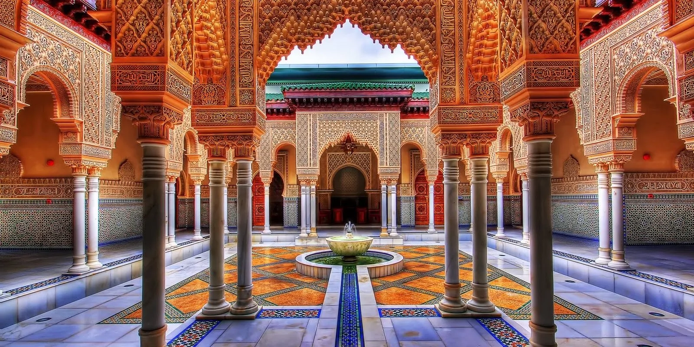

ПОНУДА ЦЕЛА ГОДИНА

МАРАКЕШ И ПУСТИНАТА
Маракеш, Мароко
08.09 - 14.09
Откријте го магичниот Мароко, земја на шарени пазари, древни градови, пустински пејзажи и богата култура. Истражете го Маракеш со неговите тесни улички, традиционални пазари и прекрасни палати, а потоа тргнете кон пустината за незаборавна авантура меѓу златните песочни дини. Совршено патување за љубителите на култура, природа и авантура.
МАРОКАНСКА АВАНТУРА
Еден од најпознатите и најживописни градови во Мароко, познат како „Црвениот град“ поради карактеристичните црвенкасти градби и богатото историско наследство. Градот плени со своите палати, градини, тесни улички и познатиот плоштад Џема ел Фна, каде се чувствува автентичната мароканска атмосфера. Маракеш нуди уникатна комбинација од традиција, култура, гастрономија и живописен ориентален дух.
Истражување на срцето на стариот Маракеш, исполнето со тесни улички, традиционални сукови и продавници со разновидни локални производи. Пазарите се познати по шарените зачини, текстилот, кожните производи, ракотворбите и традиционалните сувенири, создавајќи уникатна атмосфера полна со мириси, бои и звуци.
Живописен пустински предел во близина на Маракеш, препознатлив по каменестите пејзажи, пространите хоризонти и прекрасните погледи кон Атласките планини. Посетата нуди можност за фотографирање, уживање во пустинската атмосфера и традиционално чајување, со можност за дополнителни активности за авантуристичко доживување на регионот.
Импресивен планински регион кој се протега во близина на Маракеш, со високи планински врвови, живописни долини и традиционални берберски села. Панорамското патување низ овој предел овозможува уживање во прекрасните природни пејзажи и запознавање со традиционалниот начин на живот на локалното население.
Состанок со групата на аеродром во Скопје, 2 часа пред летот. Следува диретен лет до Истамбул па директен лет до Мароко и пристигнување на аеродромот. По завршувањето на аеродромските процедури следува организиран трансфер до хотелот и сместување. По сместувањето е предвидено време за одмор и освежување. Попладнето следува прва прошетка низ околината и запознавање со Маракеш. Вечерта е слободна за вечера и индивидуални активности. Ноќевање во хотел.
Појадок во хотелот и организирано разгледување на Маракеш. Следува прошетка низ централните делови на градот и разгледување на плоштадот Џема ел Фна, Кутубија и околните градски улици. Потоа следува посета на Мајорел Гарден и слободно време за фотографирање и уживање. Во продолжение е предвидено слободно време за ручек, кафе, шопинг и индивидуално разгледување. Попладнето следува враќање во хотелот и слободно време за одмор. Вечерта е слободна за вечера и индивидуални активности. Ноќевање во хотел.
Појадок во хотелот и организирана прошетка низ Медина. Следува разгледување на традиционалните сукови и тесните улички исполнети со продавници, зачини, текстил, ракотворби и локални производи. Патниците ќе имаат време за фотографирање, шопинг и запознавање со локалната атмосфера. Следува слободно време за ручек и индивидуално разгледување. Во попладневните часови е предвидено слободно време за дополнителна прошетка низ Медина и посета на плоштадот Џема ел Фна. Вечерта е слободна за одмор и индивидуални активности. Ноќевање во хотел.
Појадок и организирано заминување кон Атласките планини. Следува панорамско патување низ планинските предели и долините во околината на Маракеш. Предвидено е разгледување на живописни предели и традиционални берберски села, со можност за кратки прошетки и фотографирање. Во текот на денот е предвидено слободно време за ручек и одмор во природна околина. По завршувањето на посетата следува организирано враќање во Маракеш. Вечерта е слободна за вечера и индивидуални активности. Ноќевање во хотел.
Појадок и организирано заминување кон пустината Агафај, која се наоѓа во близина на Маракеш. Следува панорамско патување низ пустинските предели со каменести пејзажи и погледи кон Атласките планини. Предвидено е време за фотографирање и уживање во природата. Во зависност од организацијата, можност за дополнителни пустински активности и традиционално чајување. Следува слободно време за ручек и одмор. По завршувањето на посетата следува организирано враќање во Маракеш. Вечерта е слободна за вечера и индивидуални активности. Ноќевање во хотел.
Појадок во хотелот и слободен ден за дополнително уживање во Маракеш. Патниците ќе имаат можност за повторна посета на Медина и суковите, шопинг, фотографирање и индивидуално разгледување. Предвидено е слободно време за ручек, кафе и уживање во локалните ресторани. Попладнето е предвидено за одмор или дополнителна прошетка низ градот. Вечерта е слободна за вечера и индивидуални активности. Ноќевање во хотел.
Појадок во хотелот и одјавување согласно предвиденото време. По собирањето на багажот следува организиран трансфер до аеродромот во Маракеш. По пристигнувањето следува пријавување за летот и завршување на потребните аеродромски процедури. Потоа следи директен лет до Истамбул, па директен лет до Скопје. По пристигнувањето и преземањето на багажот завршува организираното патување.